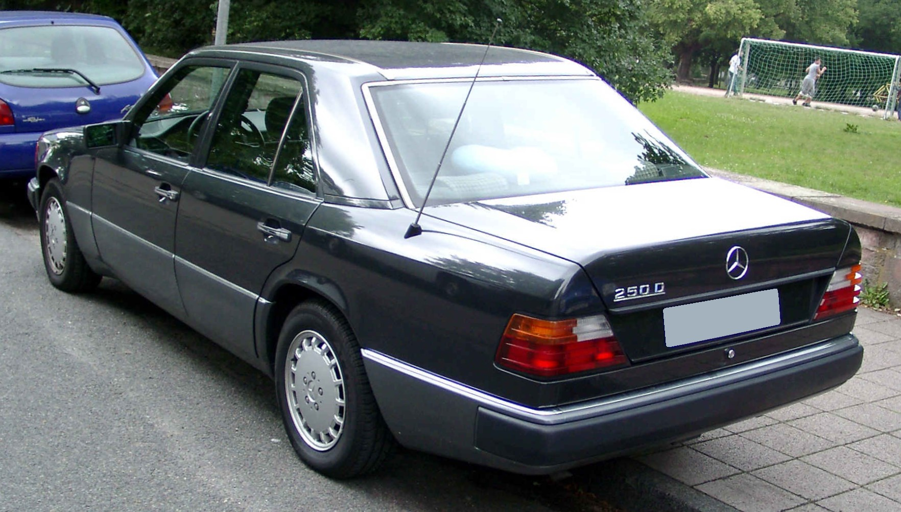

Mercedes-Benz W124

Lóerő: 150 HP
Futott km: 210,000 km
Max sebesség: 210 km/h
Ár: 1,200,000 Ft
Extrák: ülésfűtés, alumínium felnik
Motor: 2.0L I6 benzines
Váltó: manuális
Bezárás
Futott km: 210,000 km
Max sebesség: 210 km/h
Ár: 1,200,000 Ft
Extrák: ülésfűtés, alumínium felnik
Motor: 2.0L I6 benzines
Váltó: manuális